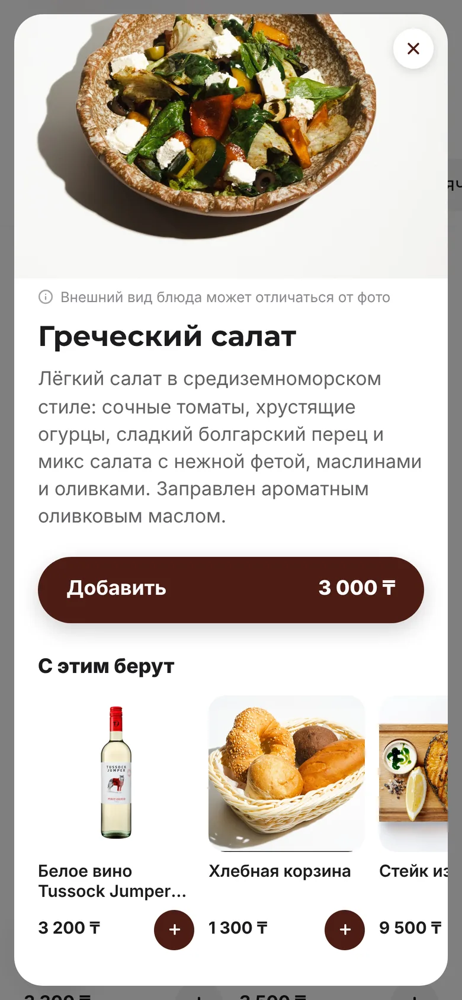
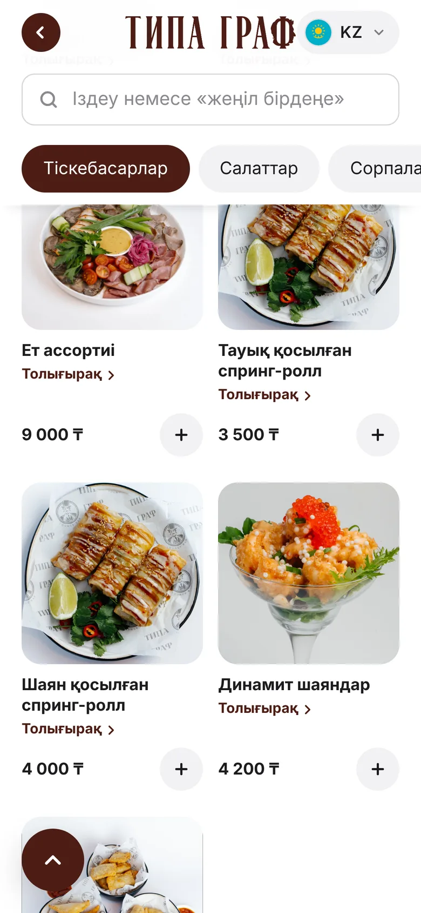
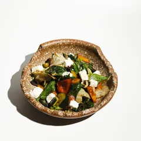
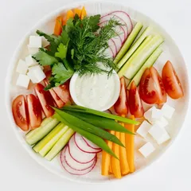
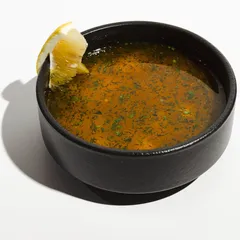
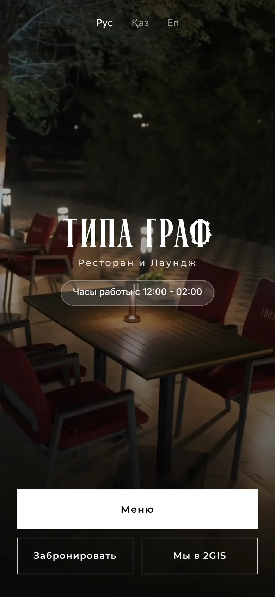
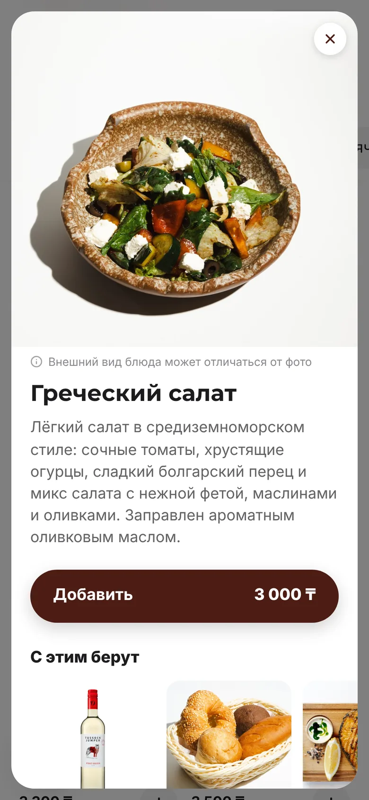

Умное QR-меню для кафе и ресторанов
Гость сканирует QR и за секунды находит блюдо: на своём языке, с фото и умным поиском. Цены и стоп-лист вы меняете сами, с телефона.
Сделано в Уральске. Работаем по всему Казахстану.
Гость сам находит, что заказать
Умный поиск обычными словами
Гость пишет «хочу что-то лёгкое» или «что к пиву», и меню подбирает блюда из вашей карты с объяснением, почему они подходят.
Нажмите, это настоящие ответы меню Типа Граф:

«С этим берут» под каждым блюдом
Открыл салат и видит, что к нему заказывают: вино, хлебную корзину, стейк. Добавляет в один тап. Официанту не нужно уговаривать.
Казахский, русский, английский
Язык переключается одной кнопкой: названия, описания и поиск. Каждый гость читает меню так, как ему удобно.

Меню меняете вы, за минуту
- Цены и стоп-лист
- Блюдо закончилось или выросла цена: поправили в админке с телефона, гости видят сразу. Без перепечатки.
- Статистика
- Что гости открывают, что ищут и что кладут в корзину, по дням и часам.
- Сторис, акции, бизнес-ланч
- Видео и акции наверху меню, как в Инстаграме. Ланч на каждый день недели меняется сам.
- Свой домен и свой стиль
- Меню на вашем адресе, как tipagraf.kz, с вашим логотипом, цветами и шрифтами.
- Заказ без ожидания
- Гость собирает заказ в корзине и показывает экран официанту или отправляет его в WhatsApp.

Греческий салат
Овощная нарезка
Уха классическая
Поменяйте цену или выключите блюдо: так это выглядит в админке.
Живой пример: Типа Граф, Уральск
Первый ресторан на tut.menu. Это настоящее меню, им каждый день пользуются гости. Наведите камеру на QR или откройте tipagraf.kz.


Одна цена, всё включено
- Меню на трёх языках с умным поиском
- «С этим берут», корзина и «Показать официанту»
- Админка с телефона: цены, стоп-лист, фото
- Сторис, акции и бизнес-ланч по дням
- Статистика: что смотрят и что ищут
- Ваш домен, логотип и дизайн
- Перенесём ваше меню сами, по PDF или фото
- Поддержка в WhatsApp
Частые вопросы
Работает с Kaspi QR?
Меню не мешает оплате: гость платит как обычно, через Kaspi QR или терминал. Можем добавить в меню кнопку с вашей ссылкой на оплату Kaspi.
Есть интеграция с iiko?
Сейчас меню ведётся в нашей админке, цена меняется за десять секунд. Синхронизацию с iiko обсуждаем под ваше заведение.
Сколько ждать запуска?
Демо собирается за 2 минуты. Готовое меню с вашими блюдами обычно запускаем за 1–2 дня.
Кто наполняет меню?
Мы. Пришлите PDF, фото бумажного меню или таблицу, и мы перенесём блюда, цены и описания сами. Дальше правите в админке.
Гостю нужно скачивать приложение?
Нет. Меню открывается в браузере по QR-коду, ничего устанавливать не нужно.
Можно на своём домене?
Да, как tipagraf.kz. Если домена ещё нет, подскажем, где купить, и подключим сами.
Соберите своё меню за 2 минуты
Выберите дизайн, загрузите логотип и получите ссылку на демо с вашим названием. Бесплатно и без звонков.
Сделано в Уральске. Работаем по всему Казахстану.